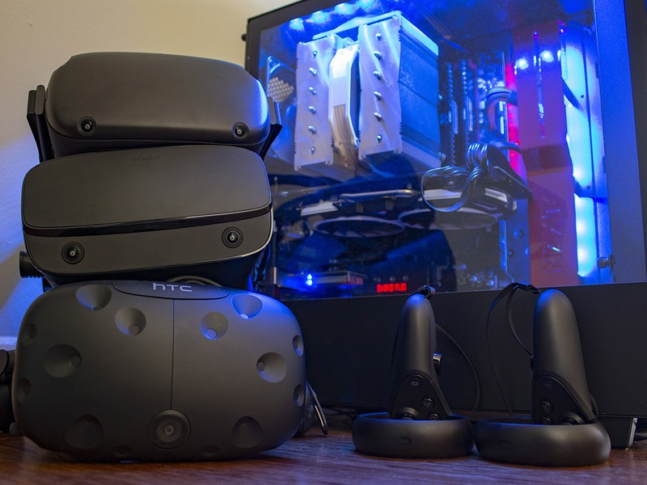
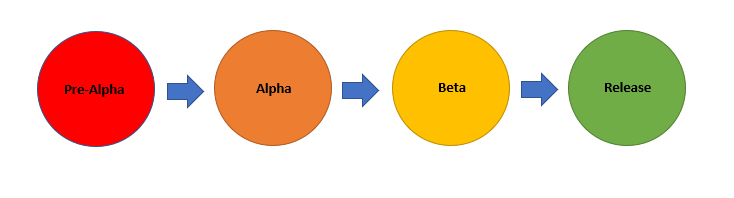
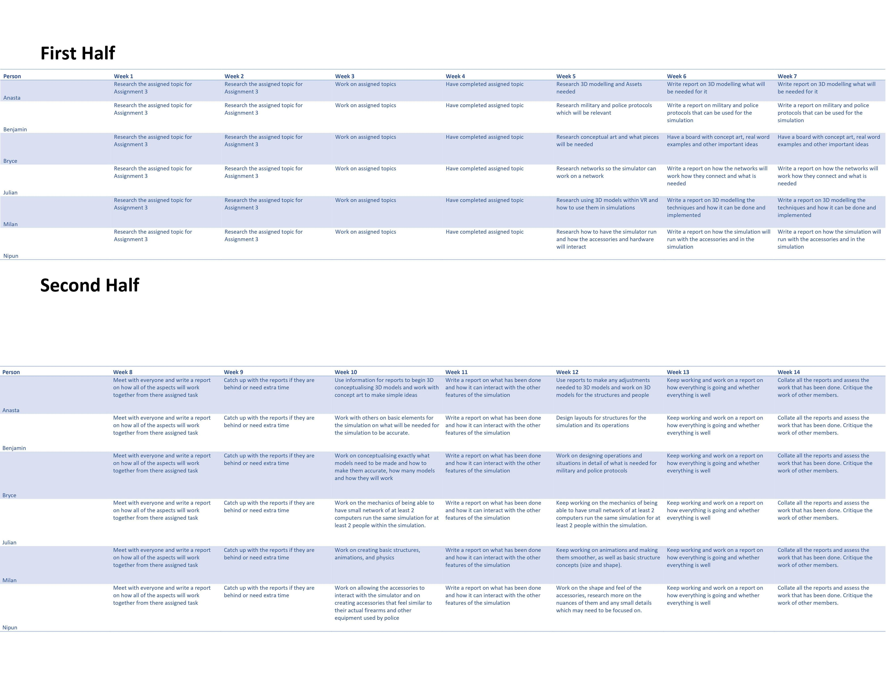

Our Aim for this project
For all projects to be successful after it is release it is important to have set aims at the starting stages of the project. By identifying what we as developers are attempting to achieve by producing the project it enables the us to create a project that can reach the stage that it is aspired to reach. During the process of setting the aim for the project it is important to set smaller objectives that will help us reach the ambitious but possible stage of the project.
With our VR SWAT Training system, we aim to be able to train newly recruited SWAT to be better prepared for many of the hostile situations they face during their years of service. SWAT teams are a group of specially trained elite force that are called into action during exceptional situations where increased firepower or specialised tactics are needed. For SWAT units to be able to react to situations that they face they are required to go through rigorous training. However, the current methods of training cannot cater to the need of creating scenarios that are much more realistic. We believe that with the use of the VR SWAT Training system will be able to immerse officers in realistic situations and increase the effectiveness of the training that the SWAT teams receive.
For us to be able to create the most effective system we will need to recreate situations that have occurred in the past, SWAT teams will be able to fine tune their tactics by being immersed in these situations. This will also allow for training officers to help the units with their reactions and panic during hostile situations. When creating these immersive training situations, we will interview past members of SWAT units to identify the weak points of the current training system. These interviews will also be used to help recreate the situations that the officers have faced during their service. Together with the gathered knowledge of the weak points of the current training system this will allow us to create our project in a way that will be most effective and create stronger SWAT teams will a low rate of failure during hostile situations.
Plans and Progress
Planning the future of a project aids in increasing the chances of success of any project. These plans will help us monitor the progress of our project. Our plan is to use a console-based VR system when implementing our project, this will allow us to create a system that is easy to update as the system gets more and more refined. With the abundance of access to console VR systems SWAT units around the world will have easy access to the hardware that is required for our application. It is also evident that the modern consoles are getting more and more powerful therefor the system will not be held back by the power of the console.
However, the availability of consoles to most individuals will create a security issue in regard to unlawful groups being able to have access to the training system, therefor reducing the effectiveness of our training system as these groups will have access to the tactics of the SWAT units. Therefor we will be creating a security system that would require for each unit to enter a security code before each training session. We are also planning to keep track of the number of access points for the system as well as where the system is being accessed from to assure the security of the training system.
We are also planning to interview past officers, in order to gather knowledge on situations that they have faced, these situations will later be created through virtual reality and provided to law enforcement. The use of knowledge from former officers will allow to create a system that will
accurately imitate hostile situations. One of our main focuses will be hostage situations as SWAT units are being called to these situations time and time again. The system will allow for units to train for different types of hostage situations and reduce the rate of fatalities during these circumstances.
Currently we are in the process of reaching out to former officers and gathering knowledge as well as creating the code for the application. We have already chose to use a console based VR system rather than specialised hardware allowing for cheaper updates to the system for the units and reducing the financial strain that they might face if we were to use a specialised system for the program. Once the code is completed and implemented with the VR systems, we will begin our testing.
Roles
It is important for tasks to be delegated effectively when creating any project, when delegating tasks, it is important to take account of each team members strengths. We have made sure that we have delegated the tasks in a way that uses each members’ strengths to its fullest potential to allow us to create our project.
Because of the creative capabilities that Ben has as well as the thorough understanding of what the project needs to achieve in the future, Ben has been chosen to taken charge in creating the aim and setting the objectives for the project. The team as a collective also have input on these ideas however, the role of setting the aspirations for the project will be carried out by Ben. He will also be overlooking the testing procedure and assessing the results after each stage of testing.
Bryce’s capability of performing extensive and thorough research proved that he should be taking the main role in creating the interviews and researching what the requirements of the program. He will create and carry out the interviews that will help us create situations using virtual reality. The research that he conducts will be one of the major factors of the program’s success. Therefor the whole team will also be helping him with any tasks that he requires them to complete as some of the tasks might be overwhelming for an individual to carry out.
Milan and Julian have shown skill in creating documents that are needed to be able to conduct the testing sequence. As a part of their task they will be working closely with a few SWAT units as well as law enforcement service as a hole. They will also be required to find user groups that are predicted to use the product in order to conduct the testing. As there might be large groups of users attending these testing sessions the team will also be aiding them with the sessions. As the project is a extensive program with many functions we are expecting to have to conduct many testing sessions in waves as it is not possible to be completed in attempt.
Anasta and Nipun have been chosen for the programming of the project, they have shown that they collectively Are familiar with a couple programming languages. However, the extensive features and the nature of the program has shown that they will need help when creating the code for the program. They will be receiving help from both the team as well as external sources. The external sources will help when none of the Commies are able to find solutions for the issues they might face with the implementation of the code. This will help reduce the amount of limitations that the team will face as they complete the project.
Though we have split tasks among us we will be helping each other as we go on with each task, this collective approach towards each task is one of the Commies greatest strengths and we will continue to use it to our advantage throughout the project.
Scopes and Limits
Our project SWAT VR has many features that would make this a great application for law enforcement training. The main functional requirements for this project would be a hostage SWAT
simulation with breaching and retrieving a hostage from different urban environments and situations. This is a prioritised function as this is the main and core purpose of this application.
Having a voice and proximity chat is also vital to the application as learning call-outs and improving communication in team environments for breaching and retrieving a hostage is crucial in
these scenarios. The coordinator being able to control the environments and communicate to personnel is also a feature that is vital to be in the final version as law enforcement training requires
acher being able to monitor and control what needs to be taught.
Having a bomb defusal situation would have also been a good feature to be another additional situation practice for enforcement training, however developing another virtual reality bomb
defusal mode would take more time and resources to develop. Depending on the amount of time is set to finish and complete the program with the associated cost available, this is most likely not
viable to include this in the project. Having a haptic feedback suit may not also be included in our final version of our project as creating and developing our own haptic suit specifically for
our software could be costly to produce. It would be a nice additive for a more immersive experience for better training but isn’t necessary to the program. This final version being optimised
onto consoles may also not make it into the final version of our project. This is due to needing more time and resources to fully optimise the VR program onto consoles that may not have the
graphical power to run the program. It will also need more time from us to develop our project to work with consoles, therefore it would be better to prioritise our time effectively on other
functions that is crucial for our project.
| In (All the Features) | Out (What Features are not being used) |
|---|---|
| Breach and retrieve simulation | Application optimised for different hardware |
| Real life sized motion prop weapon designed for VR | VR Haptic feedback suit |
| Heart rate measurement | Bomb defuse simulation |
| VR haptic feedback suit | |
| Voice Chat and proximity chat | Bomb defuse simulation |
| Display performance situation in statistical format | |
| Instructor control features (communicate and monitor personal call-outs) |
Tools and Technologies
The VR SWAT simulation is a tool to be used to simulate various operations inside of virtual reality. VR is incredibly useful as it allows for the user to simultaneously experience things that can happen in the real world without lots of spending. Tools required for it will likely be similar to that of video games, this is as that it will use similar mechanics to seem familiar to users. The software and hardware used will likely be based on these mechanics and principals while also keeping in mind a low budget.
Software
- Unreal Engine 4 or 5. Unreal Engine is a 3D creation tool, made by EPIC games creators of Fortnite, which can be used to create realistic 3D environments. This can be used to simulate operations and other situations using real people or even AI bots. This allows for there to be many varied scenarios in different locations. The reason why it may run on 4 or 5 is dependant on when the development of the application takes place and for what hardware it will run on as Unreal 5 has just been announced but is much more powerful requiring more powerful hardware to run.
- Windows 10 as an operating sysem
Hardware
- The hardware will depend on what the simulation will need to do. For larger scale operations it will require higher specifications for events with more than 1 person however for smaller operations it can run on lower, and thus cheaper specs, while still giving a thorough experience. This is because the simulation will likely be used by smaller police units or even larger groups of militaries so being able to run on minimal specifications and being able to scale it up works better than only having it for one or the other.
PC

The specifications for the PC shown will be the recommended and should, there be more demanding uses of the simulation, the users will need to use higher specifications.
- Intel i5-4590 equivalent or greater. This CPU will be able to run the VR simulator for one person easily however on lower level specs
- NVIDIA GTX 970 equivalent or greater. This can run graphic the simulator efficiently and well for VR
- 8gb of ram or more. This is enough power for the VR to run smoothly for a simple operation.
- HDMI 1.3 and 3x USB 3.0 plus 1x USB 2.0. These ports are required for the headset that will be used.
VR Equipment
No particular headset is specified however the accessories required will depend on the headset and will need to be change settings for within the simulation set up. While some headsets will work with mobile the simulation requires more power and as such will be one that works with PC and not one that works with mobile
- Oculus Rift S. This headset is the most ideal as it allows for multiple controllers. These can be fine tuned to work with specific hardware for the simulation if needed or use the c ontrollers that come with the Rift S
- Oculus Touch Controllers. These come with the headset and are the default controllers. With some work and however our VR simulator will come with a variety of different “controllers” which will imitate the feel of the firearms needed for the operations.
- Simulation Firearm Controller. Coming in a variety of shapes, they are designed to have a similar shape and similar functions as real firearms. This will likely be highly flexible on what headset is required and have its own sensors which work with multiple types of headsets.
Testing

All projects of any application need testing to gain input and feedback from different kinds of users to determine pros and cons. Testing for our SWAT VR will need many different tests to try get our application the best it can be. Testing should start after most software and code has been programmed and should take around 6 months to finish. The reason for a long duration would be fixing bugs and issues, as well as waiting for feedback from users.
We would first need to have a Pre-Alpha test, which consists of majority of the User Interface being complete, but back-end code not fully finished. Having this pre-alpha testing will allow us to discover what user interfaces are effective and efficient to implement for the user. An example would be navigating through the main menus and hostage settings.
When Pre-Alpha version testing has been completed, we would move onto Alpha Testing. This consist of having the software and back-end code being almost complete and having it testing internally. Alpha Testing will determine the main and critical bugs that we will be able to address and fix while continuing to finish off the software code. This would involve us and people we know testing our application.
We would then move to Beta testing where our user interface and software is stable for testing to a wider range of users. What would be included in the Beta Testing would be a fully functional VR SWAT situation simulation with its main functions included such as having a hostage situation with around one or two different scenarios and urban environments. We would have a focused beta testing to ex-military, veterans and current or past police and SWAT enforcers to gain the best possible feedback. We would attempt to get these contacts by directly emailing or phoning their departments with a description of the project. We may also have a public beta testing depending on the amount of contacts and feedback we get from our focused beta testing, as the more criticism and responses we get, the better for us to discover and fix issues.
Once the beta feedback has been received and resolved, we would be on track to a full release where we would be developing more different scenarios and urban environments to give more variety for release. After the additional non-functional requirements are programmed, and there is nothing more we need to add or fix, we will fully release the software as testing is now complete.
Timeframe

Goals:
Week 4: Assignment done
Week 7: Have reports on what everyone has done and what data will be relevant for them and anyone else
Week 10: Begin doing simple and basic concepts for a prototype
Week 14: Have a basic idea of what has been done and have simple concepts made
{kind=link}
Risk of VR SWAT
There are risks in creating any projects. And in our VR SWAT project, we are aiming this project to help and train SWAT personnel on real life situations,
however there are still some risks in this project as well. One of the risks about this project is learning a game engine programs to work with VR and to work properly,
and my estimate for learning a game engine is approximately 2-6 months. And another risk is computer powerful enough to run the VR games with multiple personnel in use.
Other risk to point our will be when we are testing out the program. There will be a possibility of the program not working or having some bugs that need to be cleared up
for use. However, the biggest risk during testing period will be the person who is testing the VR SWAT program. As they try on the VR to do the testing, the risks to the
person include Eye strains which leads to headaches, falling over and bumping into/walking into things, nausea/ vertigo/ motion sickness, over stimulation, panic
attacks/fear, sometimes the weight of the headset can have some headache and pain all over the nose bridge area and also a risk of neck pain and back pain, and there is
a risk of seizures and if the headset is not clean there will be a risk of infection around the face, where the headset were present and prolonged use of the VR can lead
to major health problems like gorilla arm syndrome and rotator cuff injuries. However, these risks can be minimal if treated appropriately.
Group process and communications
The commies recorded meetings take place once a week and always happen following the Intro to IT tutorial. This allows the group to always know when a meeting is taking place and means that there will be no issues with picking a different date and time each week. As well as the weekly meetings, the group is constantly messaging on the same platform (Microsoft Teams) to give regular updates to one another and also to get help from one another as if one group member does not understand something its likely that another group member will. The group also communicates with the sharing of files for the project.
As a result of this the commies were able to work well together and in terms of communication there is no problems apart from the fact that at this current point in time we can’t physically communicate face to face.
Skills and Jobs
To further develop the project, the team of people that would be needed to include individuals with hardware expertise, software expertise and leaders or managers. In order for the group to successfully work together, a group leader or manager would be beneficial towards the group. This individual should be someone who possesses great communication skills as they would be the individual who would be tasked with connecting other group members and allowing them to understand what other group members require.
In order to physically build the product, individuals with expertise in the relevant hardware would be necessary. This would most likely be someone who has worked in the filed of virtual reality previously, most notably in the area of virtual reality hardware as they would be tasked with designing and manufacturing what the people using the device would wear and how the product reacts and responds to the user.
In parallel with the hardware aspect of the product is the software. This indicates that individuals who have knowledge in the non-physical aspects of virtual reality would be ideal. Someone who has experience with first person shooter games may also be beneficial to this role as they have knowledge of how the training device should look and feel.
As the two developmental roles are required to focus on different areas, it is essential for the two teams to communicate as well as the individual in the managerial role to be able to communicate the needs of the teams between each team so that the teams can function smoothly.
The team that would be most successful in developing this product would be a six-person team that includes the following.
Manager
- Communication
- Planning
- Role delegation
- Motivation
- TeamWork
VR Engineer
- Programming Skills
- Teamwork
- Communication
- VR Tools development
Example https://www.oculus.com/careers/a1K2K000007r6kyUAA/?locale=en_US
VR Game Designer
- Programming Skills
- Teamwork
- Communication
- Game Design
- VR/AR Design (3D Modelling)